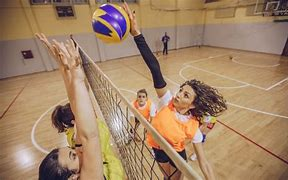

Vôlei
O vôlei é um esporte praticado entre duas equipes numa quadra retangular. Ela é dividida por uma rede colocada verticalmente sobre a linha central.
O vôlei é jogado com uma bola e com as mãos. O objetivo principal é lançar a bola por cima da rede e fazê-la tocar no chão do adversário.
Regras
- • Cada equipe possui um técnico;
- • Uma partida é constituída de 3 a 5 sets;
- • Não existe tempo pré-determinado para cada set;
- • Cada set tem um máximo de 25 pontos com uma diferença mínima de 2 pontos;
- • Em caso de empate no final do set (24 x 24), a partida continua até que a diferença de dois pontos seja atingida (26 x 24, 27 x 25, etc.);
- • Ganha a equipe que vencer três sets;
- • Se houver empate nos sets (2x2), o 5º set será decisivo. No entanto, este vai somente até 15 pontos e também precisa de uma diferença mínima de 2 pontos.

História do Vôlei
O voleibol, também conhecido como vôlei, teve suas origens nos Estados Unidos, no final do século XIX. William G. Morgan, diretor de educação física da YMCA, desenvolveu o jogo como uma alternativa menos intensa ao basquete, com o objetivo de proporcionar uma atividade recreativa para homens adultos. A primeira partida de voleibol foi disputada em 1895 em Massachusetts, com uma rede improvisada a uma altura de aproximadamente 1,98 metros.
O esporte rapidamente se espalhou e ganhou popularidade em outros países, especialmente após a Primeira Guerra Mundial. Em 1947, a Federação Internacional de Voleibol (FIVB) foi fundada para governar e promover o esporte em nível global. O voleibol de quadra foi incluído pela primeira vez nos Jogos Olímpicos em Tóquio, em 1964, para os homens, e em 1964, para as mulheres.
Ao longo das décadas, o voleibol evoluiu tanto em termos de regras quanto de popularidade. O esporte ganhou destaque em todo o mundo, com a participação em torneios internacionais, como o Campeonato Mundial de Voleibol e a Liga das Nações de Voleibol. Além disso, o voleibol de praia emergiu como uma variante popular do esporte, sendo oficialmente reconhecido como uma disciplina olímpica em 1996, nos Jogos de Atlanta.
Atualmente, o voleibol é praticado em todos os continentes e é um dos esportes mais assistidos e praticados globalmente. O esporte continua a evoluir, com regras refinadas, avanços tecnológicos e um crescente interesse de novos países e comunidades. O voleibol não só é uma competição esportiva, mas também uma forma de promover a saúde, a socialização e os valores de trabalho em equipe em todo o mundo.